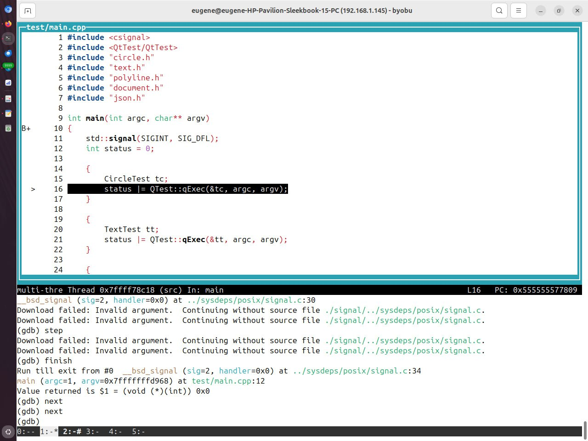

2026-02-13
12:09
GDB cheat sheet
Будет пополняться по мере необходимости
Для дебага лучше собирать без оптимизаций и с выводом отладочной информации
CXXFLAGS := -O0 -g
-g Produce debugging information in the operating system's native format (stabs, COFF, XCOFF, or DWARF). GDB
can work with this debugging information.
On most systems that use stabs format, -g enables use of extra debugging information that only GDB can use;
this extra information makes debugging work better in GDB but probably makes other debuggers crash or refuse
to read the program. If you want to control for certain whether to generate the extra information, use
-gvms (see below).gdb --args ./build/main - запуск в дебаггере
gdb -p PID - подключиться к запущенному процессу
run - запустить программу catch throw -
остановиться после выброшенного исключения catch catch -
остановиться после пойманного исключения
catch signal SIGNAL - остановиться при пойманном
сигнале
break function_name - breakpoint по имени функции
break file.cpp:42 - breakpoint по строке в файле
break foo if x == 10 - условный breakpoint
bt - вывести текущий стек вызовов
step - следующая инструкция (step into)
next - следующая инструкция (step over) finish
- выполнять до выхода из функции (step out) continue -
продолжить выполнение
print var - вывести значение переменной
display var - выводить значение переменной при каждом шаге
watch var - breakpoint на изменение переменной
list - вывести код
info args - аргументы текущей функции
info locals - локальные переменные
tui enable - псевдографический интерфейс 😱
print == Evaluate
🤯
print позволяет вычислить любой expression в текущем
контексте и выводит результат.
Оказалось, что не любой, на некоторых падает. На каких - пока не понял.
(gdb) print Print(str_node)
$15 = "\"Hello, \\\"everybody\\\"\""Повтор команды
Нажатие ENTER приведет к повтору предыдущей команды.
Т.е. можно ввести continue, а потом жамкать
ENTER
Сохранение истории команд
Отредактировать ~/.gdbinit
set history save on
set history filename ~/.gdb_history
set history size 1000Работает примерно как в bash
Отдельно настройка для того, чтобы включить редактирование команд из истории
set editing onАвтокомплит
Неожиданно, для break работает автокомплит, правда очень сильно тормозит
Чтобы ускорить можно перед запуском gdb проиндексировать символы
gdb-add-index ./build/mainPretty Print
set print pretty onФорматированный вывод
(gdb) print *this
$1 = {
root_ = {
value_ = std::variant [index 6] = {"Hello, \"everybody\""}
}
}Альтернативные шпаргалки https://hybras.gitlab.io/page/gdb/ https://habr.com/ru/articles/535960/ https://darkdust.net/files/GDB%20Cheat%20Sheet.pdf https://cs.brown.edu/courses/cs033/docs/guides/gdb.pdf
#gdb #cheatsheet
